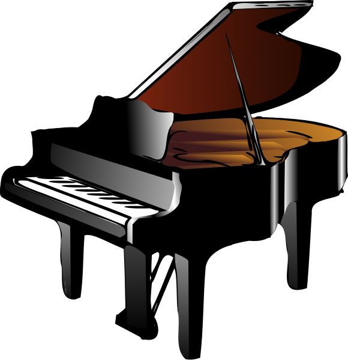

Gitar

Gitar, genellikle altı telli, ses perdeli müzik aletidir. Çalanın vücuduna karşı düz tutulur ve baskın el ile telleri tıngırdatarak çalarken aynı anda seçilen telleri ses perdelerine karşı elin parmaklarıyla bastırarak çalınır. Tellere vurmak için pena veya parmak pick'leri kullanılabilir. Gitarın sesi ya enstrümandaki rezonans odası aracılığıyla akustik olarak yansıtılır ya da elektronik bir alıcı ve amplifikatörünce yükseltilir.
Fiyat: Enflasyona yetişemiyoruz
Piyano

Piyano, İtalya'da Bartolomeo Cristofori tarafından 1700 yılı civarında icat edilmiş (tam olarak yıl belirsizdir) akustik, tuşlu bir müzik aletidir. Piyanoda ses, teller vasıtasıyla elde edilir. Piyanonun tuşlarına basıldığında içindeki tahta çekiç tellere vurarak sesi oluşturur. Tahta çekicin tellere vurmasından dolayı piyano bazen vurmalı telli çalgı olarak da sınıflandırılır. Piyano klasik ve caz müzikte yaygın olarak kullanılır. Solo performanslar, ansambl, oda müziği, eşlik, bestecilik ve prova için oldukça uygun bir enstrümandır. Piyano taşınabilir bir enstrüman olmamasına ve genelde pahalı olmasına rağmen çok yönlülüğü ve aynı anda birçok yerde bulunma özelliği ile dünyanın en yaygın olarak kullanılan enstrümanlarından biridir.
Fiyat: Bir şey demek zor